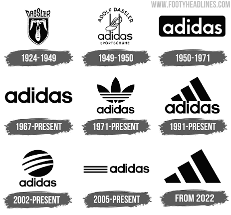

Adidas
A Adidas é uma das marcas esportivas mais icônicas e reconhecidas do mundo. Fundada na Alemanha, ela tem uma história rica que mistura esporte, moda e cultura urbana.
📜 Origem e História
- Fundação: A marca foi fundada em 1949 por Adolf "Adi" Dassler na cidade de Herzogenaurach, Alemanha.
- O Nome: Vem da junção do apelido do fundador (Adi) com as primeiras letras do seu sobrenome (Dassler).
- A Rivalidade Familiar: Adi Dassler e seu irmão, Rudolf Dassler, trabalhavam juntos produzindo calçados, mas se desentenderam. Rudolf saiu para criar sua própria marca: a Puma.
👟 Símbolos e Linhas Famosas
- As Três Listras: O símbolo mais tradicional da marca, presente na maioria das roupas e tênis.
- O Trevo (Trefoil): Lançado em 1972, hoje é usado principalmente na linha Adidas Originals, focada em moda casual e retrô.
- Tênis Clássicos: Modelos como Superstar, Stan Smith e Samba atravessaram gerações e continuam sendo fenômenos de vendas.
- Tecnologia: Destaca-se pela inovação esportiva, como a tecnologia de amortecimento Boost.
🌍 Impacto Cultural e Esportivo
- No Esporte: Patrocina grandes seleções de futebol, clubes gigantescos e atletas de elite em diversas modalidades.
- Na Cultura Pop e Hip-Hop: Desde os anos 1980 — quando o grupo Run-D.M.C. lançou a música "My Adidas" —, a marca se consolidou como um pilar da cultura streetwear.
A Evolução da Logo Adidas
1924–1949 (Dassler): O primeiro emblema refere-se à empresa original fundada pelos irmãos Adolf e Rudolf Dassler, a Gebrüder Dassler Schuhfabrik. Apresenta um escudo com uma ave a carregar um sapato de desporto.
1949–1950: Após a separação dos irmãos, surge o primeiro logótipo oficial de Adi Dassler, já com o sapato e os cravos no topo e o nome "adidas" escrito em minúsculas.
1950–1971: Introdução do logótipo retangular simples em fundo preto com o nome "adidas" a branco, focando-se no minimalismo e legibilidade.
1967–Presente: Criação da tipografia icónica com letras arredondadas em minúsculas, que permanece como a base do texto da marca.
1971–Presente (Trevo / Trefoil): Lançado nos Jogos Olímpicos de Munique de 1972, simboliza a diversidade da marca. Atualmente é utilizado na linha retro (Adidas Originals).
1991–Presente (Três Listras / Equipment): Desenhado para a linha de performance, o símbolo das três barras diagonais representa uma montanha e os desafios dos atletas.
2002–Presente (Neo / Style): Símbolo circular com três linhas em arco, utilizado em linhas de estilo urbano e moda casual.
2005–Presente: Versão simplificada com o logótipo tradicional acompanhado pelas três linhas horizontais ao lado.
A partir de 2022: A marca atualizou a sua imagem de alta performance (Performance Badge), removendo o nome "adidas" por baixo do logótipo de montanha.
